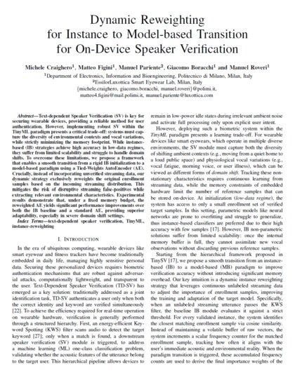

I am a Postdoctoral Researcher at DEIB, Politecnico di Milano, working on continual learning and domain adaptation.
I develop machine learning models that keep adapting after deployment, as data, users and devices change.
In October 2026 I completed an industrial Ph.D. with STMicroelectronics, on domain
adaptation and personalization for time series in distributed environments.
My research focuses on federated and semi-supervised domain adaptation,
on-device learning and personalization and robust learning for time series and biomedical
signals. I am now extending this work to
self-supervised and contrastive learning with scarce labels, and to anomaly detection, including images.
News
Started as Postdoctoral Researcher at DEIB, Politecnico di Milano.
Completed my industrial Ph.D. at Politecnico di Milano, in partnership with STMicroelectronics.
Local co-chair of AIML Systems 2026 in Lecco, where our paper on on-device speaker verification was accepted.
Oral presentation of ClusterSSFDA at IEEE ICDM 2025, Washington, DC.
Our US patent application on federated unsupervised domain adaptation was published.
Visiting researcher at UiT The Arctic University of Norway, Tromsø (May–July), with Prof. Filippo Maria Bianchi.
Oral presentation of SemiFDA at IEEE ICDM 2024, Abu Dhabi.
Publications
First author on all peer-reviewed papers. Full list on Google Scholar.
Conference papers

Dynamic Reweighting for Instance to Model-based Transition for On-Device Speaker Verification
M. Craighero, M. Figini, M. Pariente, G. Boracchi, M. Roveri
AIML Systems 2026 International Conference on AI-ML Systems · Accepted
Lecco, Italy · Oct 2026
@inproceedings{craighero2025clusterssfda,
title = {{ClusterSSFDA}: Clustered Semi-Supervised Federated Domain Adaptation},
author = {Craighero, Michele and Mesropyan, Taguhi and Carrera, Diego and Rossi, Beatrice and Stucchi, Diego and Fragneto, Pasqualina and Boracchi, Giacomo},
booktitle = {2025 IEEE International Conference on Data Mining (ICDM)},
pages = {1115--1124},
year = {2025},
publisher = {IEEE}
}
@inproceedings{craighero2024semifda,
title = {{SemiFDA}: Domain Adaptation in Semi-Supervised Federated Learning},
author = {Craighero, Michele and Rossi, Giorgio and Rossi, Beatrice and Carrera, Diego and Stucchi, Diego and Fragneto, Pasqualina and Boracchi, Giacomo},
booktitle = {2024 IEEE International Conference on Data Mining (ICDM)},
pages = {687--692},
year = {2024},
publisher = {IEEE}
}
Deep Learning for Identifying Systolic Complexes in SCG Traces: A Cross-Dataset Analysis
M. Craighero, S. Solbiati, F. Mozzini, E. G. Caiani, G. Boracchi
EMBC 2024 46th Annual International Conference of the IEEE Engineering in Medicine and Biology Society, pp. 1–4 · Poster
Orlando, FL, USA · 15–19 Jul 2024
@inproceedings{craighero2024scg,
title = {Deep Learning for identifying systolic complexes in {SCG} traces: a cross-dataset analysis},
author = {Craighero, Michele and Solbiati, Sarah and Mozzini, Federica and Caiani, Enrico Gianluca and Boracchi, Giacomo},
booktitle = {2024 46th Annual International Conference of the IEEE Engineering in Medicine and Biology Society (EMBC)},
pages = {1--4},
year = {2024},
publisher = {IEEE}
}
@article{craighero2025scgwild,
title = {{SCG} systolic detection in the wild: A static--dynamic cross-dataset analysis},
author = {Craighero, Michele and Solbiati, Sarah and Mozzini, Federica and Caiani, Enrico Gianluca and Boracchi, Giacomo},
journal = {Computers in Biology and Medicine},
volume = {199},
pages = {111297},
year = {2025},
doi = {10.1016/j.compbiomed.2025.111297}
}
@article{craighero2023ondevice,
title = {On-Device Personalization for Human Activity Recognition on {STM32}},
author = {Craighero, Michele and Quarantiello, Davide and Rossi, Beatrice and Carrera, Diego and Fragneto, Pasqualina and Boracchi, Giacomo},
journal = {IEEE Embedded Systems Letters},
volume = {16},
number = {2},
pages = {106},
year = {2023},
doi = {10.1109/LES.2023.3293458}
}
Under review
Under review
K-ICL: Kernel-based Pair Mining for Instance-wise Contrastive Learning of Time Series
M. Craighero, et al. · with UiT The Arctic University of Norway
Under review
Under review
BadAvg: Aggregation-Aware Backdoor Poisoning Attack against Federated Contrastive Learning
M. Craighero, et al. · with Université libre de Bruxelles
Learning and adaptation under distribution shift: federated and self-supervised (contrastive) learning with scarce
or missing labels and data distributed across devices, extended to anomaly detection, including images.
Industrial Research Project
Feb 2026 – Oct 2026
Politecnico di Milano / EssilorLuxottica
On-device text-dependent speaker verification in changing acoustic environments: lightweight models and adaptation
algorithms for smart eyewear under strict memory and compute constraints. Paper accepted at AIML Systems 2026.
Visiting Ph.D. Researcher
May 2025 – Jul 2025
UiT The Arctic University of Norway, Tromsø
Kernel-based contrastive learning for time series with Prof. Filippo Maria Bianchi: a kernel-similarity measure
guides the selection of positive and negative pairs in a Siamese network, reducing false negatives and helping
under strong class imbalance.
Industrial Ph.D. Researcher
Nov 2022 – Oct 2026
Politecnico di Milano / STMicroelectronics
Federated & semi-supervised adaptation: SemiFDA and ClusterSSFDA, plus a multi-dataset
simulation framework for controlled domain shift (ICDM 2024, ICDM 2025; US patent application).
On-device personalization of deep models on STM32 microcontrollers for human activity
recognition (IEEE ESL 2023; tinyML Talks webcast).
Robustness under domain shift for biomedical time series (EMBC 2024; Computers in Biology and
Medicine 2025).
Security of federated learning: BadAvg, an aggregation-aware backdoor attack on federated
contrastive learning, in collaboration with ULB Bruxelles.
Talks
Invited talkEnabling On-Device Learning on STM32 Microcontrollers, tinyML Talks webcast, tinyML Foundation, 5 Sep 2023 (with B. Rossi).
Video
OralClusterSSFDA, IEEE ICDM 2025, Washington, DC, USA, Nov 2025.
OralSemiFDA, IEEE ICDM 2024, Abu Dhabi, UAE, Dec 2024.
PosterDeep Learning for identifying systolic complexes in SCG traces, IEEE EMBC 2024, Orlando, FL, USA, Jul 2024.
Teaching & Supervision
Teaching, Politecnico di Milano
Teaching assistant, InfoA (Management Engineering), Prof. Luca Magri, 2024/2025.
Laboratory supervisor, InfoA (Management Engineering), Prof. Luca Magri, 2023–2025.
Tutor, Computer Science (Civil Engineering, B.Sc.), Prof. Luca Magri, 2022/2023.
M.Sc. thesis co-supervision, Politecnico di Milano / STMicroelectronics
BadAvg: Aggregation-Aware Backdoor Attack against Federated Contrastive Learning, 2024/2025
Strengthening Learnable Quantizers for Quantization-Aware Training in Low-Bit Precision, 2024/2025
Federated Learning for Systolic Complex Detection in SCG Signals, 2023/2024
Domain-Specific Time-Series Generation via Adversarial Learning, 2023/2024
SemiFCDA: Semi-Supervised Federated Clustering for Domain Adaptation, 2023/2024
Enabling Selective Prediction on Personalized Models for the Classification of Lung Sound Abnormalities, 2023/2024
Federated Unsupervised Domain Adaptation for Human Activity Recognition, 2022/2023
Quantized Reversible Layers for On-Device Neural Networks Training, 2022/2023
Service
Local co-chair, AIML Systems 2026, Lecco, Oct 2026.
Reviewer for IEEE TIP, AAAI, ECML-PKDD, ICML and WACV.
Education
Ph.D. in Information Technology
2022 – 2026
Politecnico di Milano / STMicroelectronics
Thesis: Learning in the Wild: Domain Adaptation and Personalization for Time Series in Distributed Environments